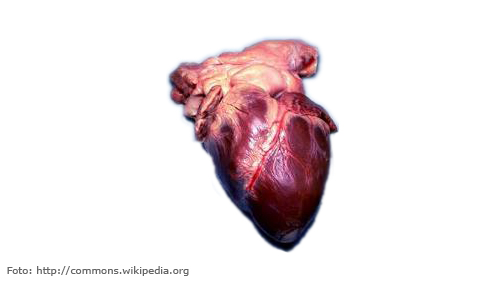
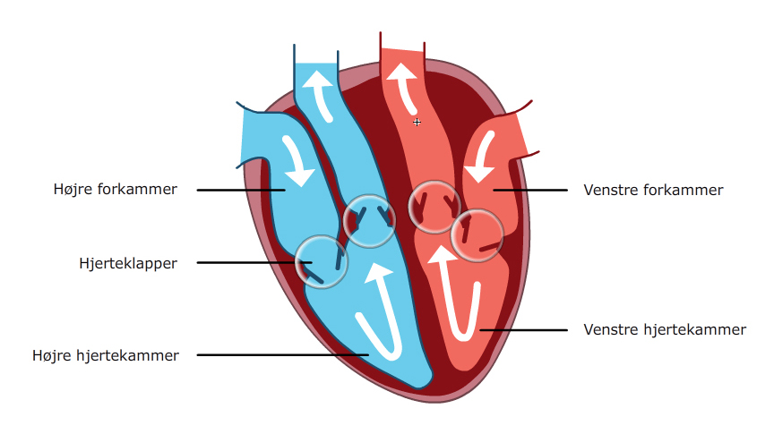
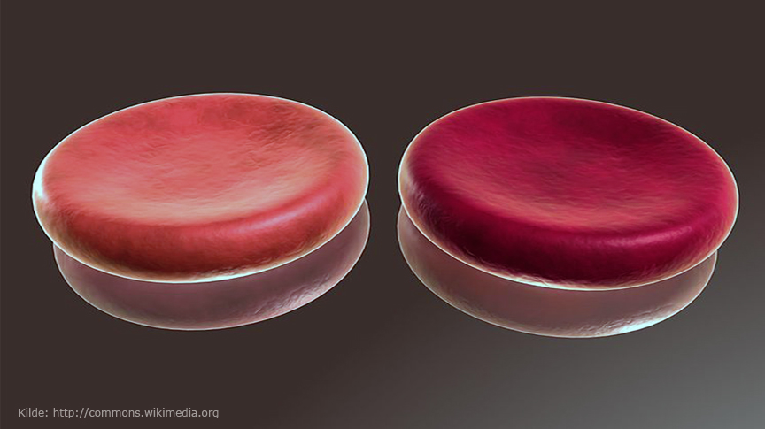

Hjertet spiller en stor rolle for at få ilten rundt i kroppen så vores celler kan arbejde. Uden hjertets pumpen vil cellerne ikke kunne arbejde og vores krop ville dø. Find ud af hvordan hjertet virker i dette afsnit.
Hjertet er en stor muskel, der skiftevis trækker sig sammen og slapper af. Når hjertet trækker sig sammen, pumpes blodet ud af hjertet. Når musklen slapper af, vil hjertet igen fyldes med blod. På Billede 1 ses et virkeligt hjerte. Ligesom lungerne er hjertet rødt og kødligt. Hjertet er placeret i brysthulen mellem højre og venstre lunge. Hjertet sidder dog lidt til venstre for midten. Venstre betyder til venstre for dig, når du kigger ned på dit eget hjerte.
Billede 1
Hjertet er indvendigt delt i 2 halvdele. En højre og en venstre halvdel. Se hjertets inddeling på Billede 2. Hver halvdel er igen delt i 2 rum. Det ene rum i hver side kaldes forkammer, og det andet kaldes hjertekammer. Hjertet har derfor et højre forkammer og et højre hjertekammer samt et venstre forkammer og et venstre hjertekammer
Billede 2
Mellem rummene og de blodårer, der går fra hjertet, sidder nogle klapper, kaldet hjerteklapper. Hjerteklapperne sørger for, at blodet ikke kan strømme tilbage igen, når det er pumpet videre. Det er hjerteklappernes lukning, som vi kan høre, når vi lytter til et hjerte. Klik på Animation 1 for at se, hvordan blodet bevæger sig igennem hjertet. Du vil også høre hjertet slå og se, at lyden kommer på samme tid som hjerteklapperne lukker sig.
Animation 1
Blodet løber kun én vej gennem hjertet. Først strømmer blodet ind i højre forkammer. Derefter ind i højre hjertekammer. Blodet bevæger sig fra det ene kammer til det andet ved, at hjertet trækker sig sammen. Blodet fra højre side af hjertet løber derefter ud til lungerne.
Når blodet har været forbi lungerne, løber det tilbage til hjertet. Nu løber det ind i venstre side - først forkammeret, derefter hjertekammeret. Herefter bliver det pumpet ud til resten af kroppen. Blodet indeholder nu en masse ilt, som kroppens celler skal bruge. På tegningen er det vist ved, at blodet er rødt. Blod uden ilt er farvet blåt.
Blodet er selvfølgelig ikke blåt, som det er farvet på tegningen. Men det er ikke tilfældigt, at vi vælger at bruge den røde og blå farve. Når vores blod er iltet (med ilt), har det en lys rød farve. Når blodet er afiltet (uden ilt), bliver farven meget mørk rød og blålig - se Billede 3.
Billede 3
Hjertet er en muskel, der trækker sig rytmisk sammen. Når hjertet trækker sig sammen, pumpes blodet ud i blodårerne. På den måde bliver blodet pumpet forbi lungerne og bliver iltet. Ilten pumpes derefter videre rundt i kroppen så cellerne kan få ilten.